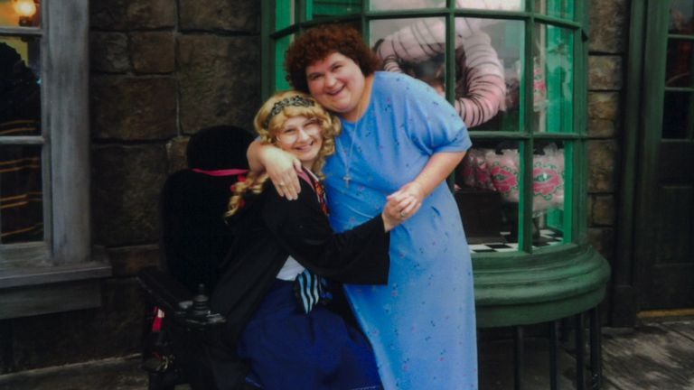
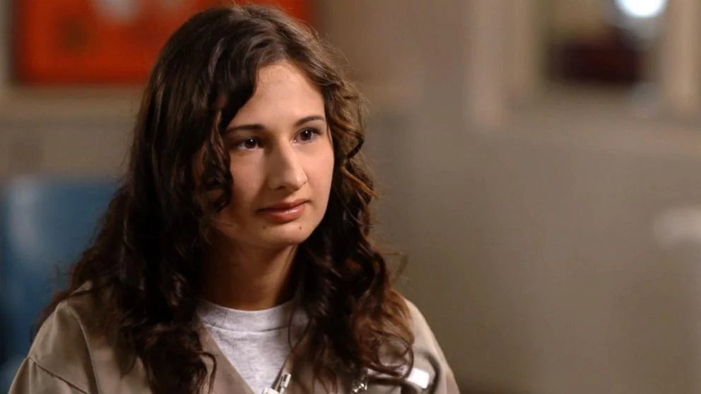
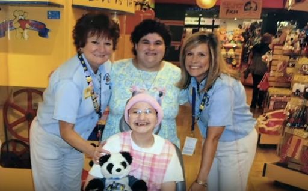

Gypsy Rose Blanchard nació con la etiqueta de “enferma” pegada en la frente. Porque, aunque no le pasaba nada de nada, desde que llegó al mundo, su madre Dee Dee, insistió con ver en ella a una paciente acorralada por distintas enfermedades. Y se abocó, con abnegación, a atender esa sucesión de desgracias. Esta historia, donde la verdadera enferma resultó ser la progenitora, merece ser contada porque para que se descubrieran décadas de abuso y maltrato tuvo que ocurrir un crimen.
Clauddine “Dee Dee” Blanchard nació el 3 de mayo de 1967 en Chackbay, Luisiana, Estados Unidos. Sus padres, Emma y Claude Pitre, tuvieron seis hijos y ella fue la menor. Emma tenía problemas con el dinero y le atraían las cosas ajenas. Su marido lidiaba con estos deslices y tuvo que ir a buscarla a la comisaría, por hurtos en locales, en varias ocasiones. Muchas veces fue sorprendida en los lavaderos automáticos, llevándose ropa de otras personas y, a su propio suegro, le robó 4.000 dólares. Emma era un problema, pero Dee Dee se convertiría en uno mucho peor.
Cuando Emma enfermó, su hija menor y quien vivía con ella, se encargó de cuidarla. Murió a los 59 años y lo curioso es que el resto de los familiares sospechó de Dee Dee: dejaron trascender que Emma podría haber muerto por inanición. Habían visto que su hija jamás la higienizaba y le daba muy poco de comer.
Dee Dee siguió su camino y se casó a los 24 años con Rod Blanchard, un chico de 17 que todavía estaba en el secundario. Dee Dee quedó embarazada, pero poco antes del nacimiento de su hija Gypsy Rose el 27 de julio de 1991, Rod salió de escena. Se había arrepentido de haberse casado tan joven. Además, reconoció haber detectado en su esposa algunas conductas estrafalarias como, por ejemplo, recurrir a las brujerías.
Una vez separados, Dee Dee comenzó con una obsesión fatal: la salud de su hija.
Se instaló a vivir con la bebé en la casa de su padre y su nueva mujer Laura. Dee Dee era quien se ocupaba de cocinar. Enseguida, su madrastra enfermó gravemente y pasó nueve meses en cama. Era algo que había ingerido y que casi la mata. Laura sospechó que Dee Dee podría haberse querido deshacer de ella poniendo en su comida un químico venenoso que se usaba para eliminar malezas. Eso sumado al modo en que trataba a Gypsy Rose, hizo que decidieran echarla de la casa. Apenas se fue, Laura se recuperó.
Dee Dee se mudó lejos. Su familia ya no podría meterse en su vida. Ahora tendría todo el tiempo del mundo para concentrarse en Gypsy.
Atrapada en una simulación
A finales de 1991, apenas cumplidos los tres meses de vida, Gypsy Rose visitó por primera vez un hospital. Dee Dee dijo a los especialistas que su hija dejaba de respirar cuando dormía. Luego de muchos estudios, idas y vueltas, terminaron por diagnosticarle apneas del sueño. La enviaron a casa con un aparato que la ayudaría a respirar. Dee Dee no quedó del todo conforme y siguió consultando por distintos síntomas. El peregrinaje por centros médicos se había iniciado.Cuando Gypsy Rose cumplió 7 años, Dee Dee le anunció a sus conocidos que su hija tenía alteraciones cromosómicas y una distrofia muscular que le impediría caminar con normalidad. Consiguió una silla de ruedas y le exigió sentarse en ella. Gypsy Rose, aun sabiendo que podía caminar, le creyó a su madre y se quedó quieta. Si le dijeron que era una inválida, debía serlo. La locura es una espiral de la que no es fácil salir.
En 2001 el Hospital Universitario de Tulane estudió a Gypsy por su distrofia muscular y los resultados fueron negativos. No tenía nada. A pesar de eso, Dee Dee siguió repitiendo que su hija tenía esa afección. Llegó a confeccionar fichas médicas falsas aduciendo que las originales se habían perdido con las inundaciones de un huracán.
Dee Dee y Gypsy Rose continuaron deambulando de hospital en hospital. Para Dee Dee, llamar la atención de la gente, se convirtió en una adicción. Con insistencia consiguió que otros médicos avalaran más estudios para los síntomas que se multiplicaban en su hija.
Con el tiempo, Gypsy Rose acumuló en su ficha médica una lista interminable de enfermedades y trastornos: asma, epilepsia, problemas auditivos y musculares, discapacidad visual, parálisis del tronco inferior, daños en su sistema digestivo.
Quedó documentado que en el período comprendido entre 2004 y 2014 concurrieron más de cien veces a distintos consultorios médicos. Durante esos años Dee Dee comenzó a alimentar a Gypsy Rose a través de una sonda nasogástrica, una vía de alimentación que le fue introducida por la nariz y que viajaba hasta su estómago. ¿El motivo? Había bajado mucho de peso. Para colmo de todos los males, su madre reveló que le habían detectado algo grave: leucemia.
Cada vez que salían de su casa para visitar a los especialistas, era una peripecia: Dee Dee empujaba la silla de ruedas donde llevaba también el tanque de oxígeno para el asma.
Confinada y sin futuro
Las enfermedades se habían apilado de tal manera que aplastaban el futuro de Gypsy Rose. Su madre descubrió, eso dijo, que también tenía epilepsia y convulsiones. Cada trastorno implicaba más medicamentos. Las montañas de remedios le provocaron algo horrible: que Gypsy Rose perdiera todos sus dientes.En su estado no podía concurrir al colegio y tuvo que ser educada en casa por su madre. No tenía amigos; no jugaba con nadie; le dolía el cuerpo; sufría de náuseas por el exceso de medicación. Con una vida social nula, Gypsy Rose se la pasaba combatiendo enfermedades inexistentes. Incluso fue sometida a cirugías exploratorias. Vivía en una contradicción absoluta: lo que su madre decía que tenía y lo que ella sentía. Estaba muy confundida. El tema de su enfermedad en la sangre, la asustó. Su madre rapó su cabeza y pidió ayuda a distintas organizaciones. Para conseguir esa colaboración, empezó a obligar a Gypsy Rose a fingir cosas que la joven no experimentaba. Atrapada en la red de mentiras de Dee Dee, ya no sabía lo que era tener salud o una madre normal.
Diferentes organizaciones caritativas como la Fundación Make-A-Wish o la Casa Ronald McDonald colaboraron con su causa: viajes a Disney World, regalos, mucha atención, un auto en el que entraba la silla de ruedas, entrevistas y caros tratamientos. Cuando la última semana de agosto de 2005 el huracán Katrina destruyó su casa, la organización Hábitat para la Humanidad les construyó una nueva.
Todos conocían a Gypsy Rose, sus dramas de salud y Dee Dee disfrutaba de la atención y de los “beneficios” de la enfermedad. 
Rebelión en casa
Pero, inevitablemente para su madre, Gypsy Rose creció. Con 19 años había empezado a darse cuenta de los embustes y de las molestias físicas que le generaban. Su cuerpo desmentía lo que Dee Dee afirmaba. La joven ni siquiera estaba segura de cuál era su verdadera edad, eran demasiadas las veces que la había hecho mentir. Y, aunque su madre sostenía que ella poseía el coeficiente intelectual de una chica de 7 años como consecuencia haber sido prematura, Gypsy Rose no estaba de acuerdo.Mientras el país se apiadaba de esa madre abnegada, Gypsy Rose vivía un infierno. Las discusiones entre madre e hija subieron de tono y se volvieron cotidianas. Las ansias de independencia de Gypsy Rose consiguieron que Dee Dee la castigara. Comenzó a golpearla con un perchero y a someterla mediante la privación de comida durante varios días.
En febrero de 2011, Gypsy Rose conoció a un hombre de 35 años en una convención de ciencia ficción. Él la invitó a su habitación de hotel. Enterada Dee Dee de la propuesta, fue ella a verlo enfurecida con un documento donde figuraba que su hija era menor de edad. En realidad, la joven ya tenía 20 años cumplidos.
Cuando volvieron a su casa, Dee Dee despedazó con un martillo la computadora de Gypsy Rose. Y la amenazó: “Si te encuentro haciendo esto otra vez, te voy a romper los dedos con un martillo”.
La cosa se desmadró a tal punto que decidió fugarse, pero su madre se anticipó y la encadenó a la cama durante catorce días. En las puertas, por si acaso, puso campanas para que su hija no se pudiera mover sin que ella se enterara.
Un amigo en la red
Con el tiempo, Gypsy Rose, volvió a tener una computadora y se las ingenió para usar Internet a pesar del control de su madre. Solía hacerlo por las noches mientras Dee Dee dormía. Se conectó a un sitio de citas online para personas cristianas donde, en 2013, conoció a Nicholas “Nick” Godejohn.El joven era de Wisconsin, tenía dos años más que ella y trabajaba en una pizzería. Nick no era exactamente lo que Gypsy Rose pensaba, pero ella inmersa en ese mundo materno de ficciones sanitarias creyó haber encontrado a su Príncipe Azul, quien la rescataría de las garras de Dee Dee. A su única amiga, Aleah Woodmansee, le confesó que quería casarse con él y le anunció que ya habían elegido los nombres para sus futuros hijos.
De apariencia amable, Nick presentaba un bajísimo coeficiente intelectual (apenas llegaba a 82) y padecía un desorden de identidad disociativo, también conocido como personalidad múltiple. Un detalle más: treinta días antes de conocer online a Gypsy Rose, Nick había sido detenido tras ser sorprendido masturbándose mientras miraba pornografía en un McDonald’s.
Nick estaba muy interesado en el sexo sadomasoquista y llevó a Gypsy Rose por ese camino virtual. Tenían una vida imaginaria activa en la que solían disfrazarse. Gypsy Rose llegó a posar con un cuchillo en su lengua. Todo ocurría en el mundo online, jamás se habían visto en persona. Conocerse en el mundo real sería el próximo paso. Eso sucedió en 2015 y fue muy bien planeado. Gypsy Rose iría con su madre al cine a ver Cenicienta y él se encontraría con ellas de manera “casual”. Gypsy le indicó a Nick que tenía que intentar caerle muy bien a Dee Dee.
Todo salió como lo previsto. Una vez dentro de la sala, durante la proyección de la película, se las arreglaron para encontrarse en el baño y tener relaciones sexuales por primera vez. Al terminar la noche, Gypsy los presentó, pero Nick no le gustó nada a su madre y les prohibió que se siguieran viendo.
Luego de este traspié, la relación retomó su ritmo online. En sus largas charlas se dedicaron a pensar en el plan de la liberación. Una opción era embarazarse, pero llevaría tiempo y Nick no quería. Lo mejor era que Dee Dee desapareciera. Debía morir, no había otra opción. Pero Nick nunca había ejercido la violencia y Gypsy Rose temía que él se echara atrás. En los días previos al crimen, Nick le escribió a su novia: “Cariño, olvidas que soy implacable, y mi odio hacia ella la obligará a morir. Es mi lado malvado haciéndolo. No lo arruinará, porque le gusta asesinar”.

"Sabía que no necesitaba el tubo de alimentación. Sabía que podía comer. Sabía que podía caminar. Pero le creí a mi madre cuando me dijo que tenía leucemia”, contó Gypsy años después.
La muerte está decidida
Situada en Springfield, Misuri, Estados Unidos, la casa en la que vivían estaba construida con madera pintada de rosa con aberturas blancas, tenía un techo a dos aguas y una rampa de entrada para la silla de ruedas. Enmarcada por árboles y un verde jardín, por fuera, era una casita de ensueño.La noche del miércoles 10 de junio de 2015, Gypsy Rose Blanchard dejó sin llave la puerta principal.
Apenas su novio ingresó, Gypsy Rose le dio una cinta adhesiva bien ancha, un par de guantes de látex y un cuchillo de pescado. Él se dirigió a la habitación de Dee Dee. La mujer de 48 años estaba profundamente dormida. La acuchilló 17 veces en la espalda. La víctima llegó a despertarse y preguntó a los gritos quién era él. Nick le respondió: “Soy tu maldita pesadilla”.
Terminada la faena fue a buscar a Gypsy Rose que se había escondido en el baño y tapado con fuerza los oídos para no escuchar nada. Tuvieron relaciones en el cuarto de Gypsy. Nick, estando desnudo, le pidió que le limpiara la sangre de uno de sus dedos lastimados. Luego, tomaron unos 4.000 dólares que Dee Dee tenía ahorrados y se fueron a un motel en las afueras de la ciudad. Al despertarse, se dirigieron a la estación de ómnibus y tomaron uno con destino a Wisconsin, dónde vivían los padres de Nick.
La madre del asesino, Stephanie Goldammer, contaría después a los que estaban filmando el documental para HBO: “¿Sabes? Fue raro. Cuando los recogí en la estación de autobuses en Wisconsin, le pregunté a ella: ‘¿Cómo está tu madre?’ Me habían dicho que Gypsy Rose vivía en un refugio para personas sin hogar, porque su madre la había echado (…) Por eso fue lo primero que le pregunté. Pero actuaron como si nada. La forma en que actuó la niña, quiero decir, ¿cómo puedes hacerle algo a tu madre, perder a tu madre y actuar de esa manera?”.
Un par de días después, Gypsy Rose, quien luego reconoció que se había sentido liberada con la desaparición de su madre, posteó en Facebook: “La perra está muerta”. Acto seguido agregó otro posteo donde decía que había “matado a la mujer y violado a su hija”. Parecía que un asesino violador había entrado en la casa de las Blanchard.
Encuentro tardío
Fueron los vecinos de Dee Dee los que llamaron a las autoridades luego de ver en Facebook estas extrañas publicaciones. Dijeron a la policía que estaban sumamente preocupados porque hacía días que no las veían por el barrio. Cuando la madrugada del 14 de junio de 2015 los agentes de policía ingresaron a la propiedad, encontraron a Dee Dee Blanchard sin vida, en su propia cama. Estaba boca abajo, sobre su colcha rosada, en medio de un enorme charco de sangre.Parecía llevar así varios días. Su espalda era un colador. Lo más raro de todo era que en la casa no había rastro de su hija, quien padecía tantas enfermedades que no podía moverse sola. La opinión pública y la prensa estaban muy conmovidas con esta historia.
Los investigadores tenían una meta: encontrar a Gypsy. No demoraron casi nada. Veinticuatro horas después, la policía la halló en otro estado, Wisconsin, en la casa de los padres de su novio, Nick Godejohn. Seguir sus pistas había sido fácil: recibos de compras, pasajes de ómnibus, filmaciones de cámaras de vigilancia. Además, estaban los posteos de Facebook que fueron rastreados hasta el IP de la computadora de Nick.
Fue, entonces, que tuvieron la verdadera sorpresa: Gypsy Rose no era una persona enferma ni aniñada como creían. Era una mujer adulta, sin ninguna enfermedad.
Al ser detenida, les dijo tener 19 años, aunque en su seguro médico estaba escrito 23. “¿Por qué había hecho los posteos?”, le preguntaron. Gypsy Rose reveló que quería que alguien encontrara el cuerpo de Dee Dee y le diera “un entierro apropiado”. Dijo algo más: “Escuchar a alguien cuando es asesinado es aterrador, sentí náuseas en el estómago… Todo lo que sentís es cuánto miedo tenés”. 
Gypsy Rose acaba de cumplir 30 años, está detenida en una correccional de Chillicothe y en diciembre de 2023 podrá pedir la libertad condicional
El Síndrome de Münchhausen
Los detectives de homicidios empezaron a revisar las fichas médicas de Gypsy Rose. Hallaron que algunos doctores que la habían atendido, al no encontrar pruebas de las enfermedades en Gypsy, pensaron que Dee Dee podía tener el Síndrome de Münchhausen por poder. Este trastorno mental se presenta cuando una madre o el cuidador de un chico, exagera y comienza a mentir para hacer creer que el menor padece enfermedades. ¿Con qué fin? Para conseguir la atención del resto y las “ventajas” que pueden derivar de estas situaciones.Uno de los médicos que pensó que Dee Dee mentía fue el neurólogo pediátrico Bernardo Flasterstein. Al medio ABC Noticias le confesó que examinó a Gypsy Rose y que cuando le dijo a su madre que los diagnósticos previos eran incorrectos, Dee Dee no demostró alivio. Por el contrario, tuvo un acceso de rabia y empezó a gritar que Flasterstein era un charlatán. Él especialista escribió una carta al médico clínico que atendía a Gypsy Rose donde especificaba que Dee Dee podía tener el Síndrome de Münchhausen por poder.
Un informe policial de la época mencionó que otro doctor había notificado a los servicios sociales que no había podido encontrar síntomas que respaldaran lo que Dee Dee alegaba sobre su hija. Eso condujo a que asistentes sociales visitaran la casa de Gypsy Rose en dos ocasiones, pero en el informe asentaron que no habían observado nada extraño. 
"Con mi madre no podía caminar. No podía comer. No podía tener amigos. Siento que soy más libre en la cárcel que viviendo con mi madre. Porque ahora se me permite vivir como una mujer normal", dijo Gypsy.
Sentirse más libre en prisión
Una vez detenido, Nick Godejohn, confesó de inmediato el crimen: “Está bien, lo admito. Apuñalé a su madre”. En noviembre de 2018, fue condenado a cadena perpetua por asesinato en primer grado.Debido a los años de abusos sufridos, Gypsy Rose, fue juzgada por separado de Nick y los fiscales no buscaron la pena de muerte. Se declaró culpable de asesinato en segundo grado y fue condenada a diez años de cárcel.
Según los informes médicos de la prisión, la salud de Gypsy Rose mejoró muchísimo desde que está tras las rejas. Gran parte de esto se debe a que ya no toma las grandes cantidades de medicamentos que le daba su madre. Su abogado Michael Stanfield, le dijo a los medios que, si bien la mayoría de los reclusos pierden peso en la cárcel, con Gypsy Rose ocurrió todo lo contrario: subió seis kilos y medio.
Gypsy Rose le admitió al medio ABC Noticias que ella “sabía que no necesitaba el tubo de alimentación. Sabía que podía comer. Sabía que podía caminar. Pero le creí a mi madre cuando me dijo que tenía leucemia”. Aunque las dolencias no eran reales, las cirugías y los efectos de todo lo que tomaba sí lo eran. Por ejemplo, la extirpación de sus glándulas salivales habría sido provocada por un agente anestésico que su madre le daba para adormecer sus encías, lo que la hacía babear de manera permanente. También podría haber sido la causa de la pérdida de su dentadura.
Nick Godejohn reconoció que estaba obsesionado con Gypsy Rose. Contó que “amaba a Gypsy Rose hasta el punto de que habría hecho cualquier cosa por ella. Lo he demostrado con lo que hice. Desafortunadamente, por lo lejos que llegué, siento que me ha traicionado. Siento que ella me abandonó”.
En 2018, Nick dijo a la estación de radio local KOLR10: “Desearía haber sabido que era más manipulación que amor. Si hubiera sabido eso, probablemente no habría estado en esta situación en la que estoy (...) Debido a mi discapacidad, es bastante fácil para mí ser engañado. Realmente creí que ella era mi alma gemela. Hay una parte de mí que probablemente siempre la amará, pero me ha lastimado tanto… Supongo que podrías decir que terminé amando demasiado a alguien”. A la revista Cosmopolitan le confesó: “Esos cinco días que pasé físicamente con ella, fueron los más mágicos e intensos de mi vida”.
La organización Change.org pide, en la actualidad, una reducción drástica en su condena por considerarlo mentalmente disminuido.
A pesar de su enojo, Nick querría volver a ver a Gypsy Rose. Eso aseguró Fancy Macelli, la vocera de la familia Blanchard, a la revista InTouch: “Él le envió una carta y ella la tiró. No creo que deban comunicarse, pero igual ella no tiene ningún interés en esa parte de su vida”. Gypsy Rose no lo extraña ni siente pena por él. Sostuvo que Nick era demasiado parecido a su madre: “Ambos fueron muy controladores”. En un reportaje en el programa de televisión Dr. Phil agregó que Nick tenía “múltiples personalidades que eran violentas y aterradoras” Al sitio de noticias BuzzFeed le declaró que no siente que ella haya engañado a nadie porque también fue una víctima de su madre: “Ella me usó como un peón (...) Bueno, me afeitaba el pelo y ella decía: ‘Se va a caer de todos modos, ¡así que vamos a mantenerlo bonito y ordenado! Creo firmemente que el asesinato no está bien. Pero al mismo tiempo, no creo que merezca tantos años como tengo. Creo que sí merezco pasar un tiempo en prisión por ese crimen. Pero también, entiendo por qué sucedió…”. A pesar de estar tras las rejas confesó que se siente mejor en prisión: “Con mi madre no podía caminar. No podía comer. No podía tener amigos. No podía salir afuera y jugar con amigos o cualquier otra cosa. Siento que soy más libre en la cárcel que viviendo con mi madre. Porque ahora se me permite vivir como una mujer normal”.
Papá Rod y novio Ken
Gypsy Rose aseguró que nunca supo que su padre había pagado siempre por su manutención. Rod, quien fue alejado por Dee Dee de su hija, le aseguró a Fox News: “Muchas veces llamé a Gypsy Rose, pero no la dejaban hablar conmigo. La llamaba para su cumpleaños, pero Dee Dee me decía por ejemplo: ‘No le digas que es su 18 cumpleaños... No quiero decirle cuántos años tiene´. Yo pensaba que era extraño. Me molestaba, pero esperaba que Gypsy Rose creciera lo suficiente para que algún día pudiéramos unirnos. Dee Dee tenía la custodia total y podía aislarme por completo de cualquier tipo de relación. En el trato con ella tenía que caminar por una delgada línea”.Ahora que está en la cárcel, padre e hija mantienen una buena relación. Se envían mails y se hablan por teléfono. Aunque Rod y su mujer Kristy (con quien tuvo dos hijos más), reconocen que todavía Gypsy Rose suele mentirles un poco, esperan que esta costumbre cambie.
En abril de 2019, Gypsy Rose anunció que estaba saliendo con Ken, un hombre al que no conocía personalmente, pero con quien pensaba casarse durante 2020. La pandemia alteró un poco los planes, pero trascendió que ella está escribiendo, en el centro correccional de Chillicothe donde está detenida, su propio libro.
Su trágica historia fue adaptada en 2019 para una popular serie de televisión llamada “The Act” que fue protagonizada por Joey King y Patricia Arquette, quien recibió el Emmy por su interpretación de la madre de Gypsy Rose. También inspiró la película Run (Corre), que se estrenó en noviembre del 2020 y que, en abril de este año, se incorporó al catálogo de Netflix.
Paso a paso, Gypsy Rose Blanchard, va dando vuelta la página más oscura de su existencia. Hoy tiene 30 años y se acerca a su libertad condicional: en diciembre de 2023 podrá pedirla. Tendrá una segunda oportunidad. Cómo coloque, esta vez, los ladrillos en la construcción de su nueva vida, será responsabilidad de ella.